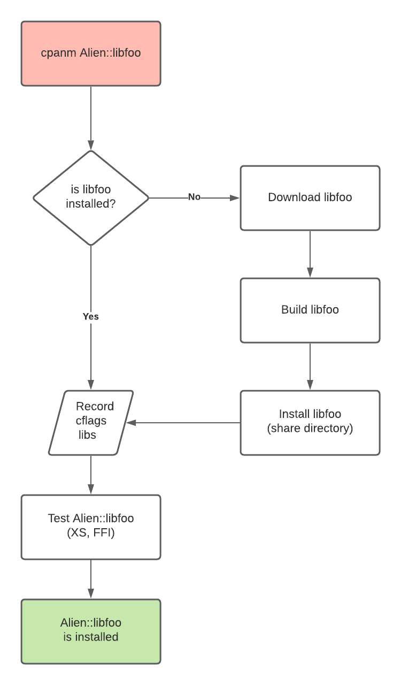
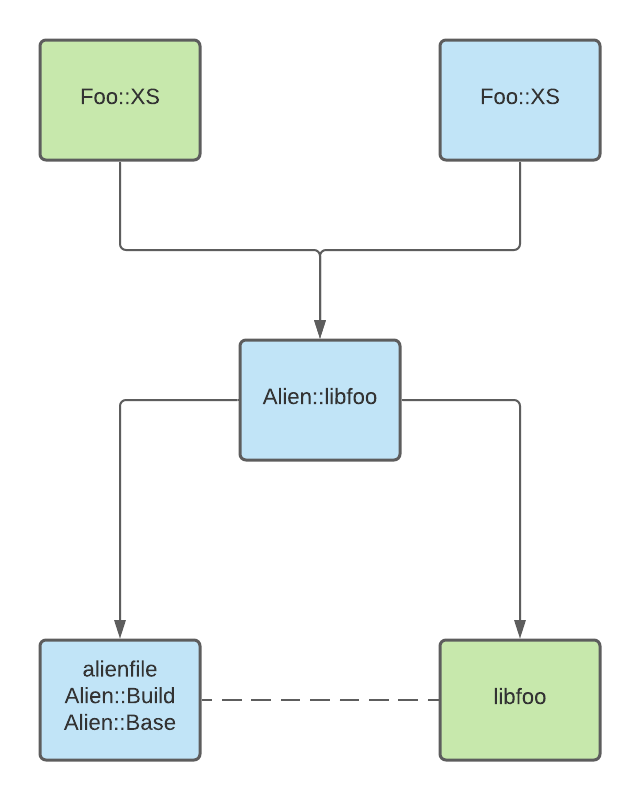

<img src="images/atn.png"> Note: * Sound FX --- # Alien Basics Note: * Welcome to Alien Basics --- ## Define * An *Alien* is a Perl module * Provides an **external**, **non-Perl** dependency * Probe for **existing system libraries** if available * **build the library from source**, if not Note: * The Alien namespace in CPAN reserved for * CPAN Modules * That provide external, non-Perl dependencies * And make them available for other Perl modules. * They do this * By probing for existing system libraries, if they are available * And they will download and build the library from source * If not --- ## Why? Without an *Alien* an **XS** or **FFI** module must rely on a user to pre-install any non-Perl dependency Note: * Without an Alien * An XS or FFI module * Must rely on the user to pre-install any non-Perl dependencies * Before installing the Perl module --- ## Why? Some **libraries** or **platforms** can make it difficult to install some dependencies. Note: * Some libraries or platforms * Can make it difficult to install some dependencies * And requiring the user to do this ahead of time creates a barrier to entry * Espeically if the user just wants to try out your module. --- ## Why? **CPAN Testers** cannot automatically install non-Perl dependencies without an *Alien* Note: * Automated tools, such as CPAN Testers * Cannot automatically install non-Perl dependencies * Without an Alien * So using an Alien will give you more feedback * From CPAN Testers and other tools * Than what you would otherwise get --- ## Alien Install Flow  Note: * The control flow for installing an Alien * Starts with your cpan client such as cpanm * At the configure stage the Alien will probe the system for the alienized package * If it can't be found * At build time * The library will be downloaded from the internet * Built from source * And installed in a share directory * This is an important detail, since the alienized package * Needs to be available to other Perl modules * But we do not want to pollute the host system with possibly incompatible libraries * For this reason, this type of install is called a "share" install * At this point we record the compiler and linker flags needed * For using the alienized package * If the library was provided by the system * We can skip the download, build and install of the alienized package * And just record the compiler and linker falgs from the system * This type of install is called a "system" install * At test time, a well behaved alien will test that the alienized package can be used * With XS and FFI * This will catch errors early and avoid installing a broken Alien --- ## Alien Dependency  Note: * NOTE FIX COLOR of Foo::FFI * Once you've created an Alien you can use it as a dependency * for XS or FFI modules. * I recommend using the Alien::Build / Alien::Base / alienfile framework * For building Aliens * These tools handle a lot of corner cases * And will help you avoid re-inventing the wheel --- ## Demo Let's write *Alien::libarchive* Note: * Now I'm going to show you how to create your own Alien * We will write an Alien for the BSD libarchive library